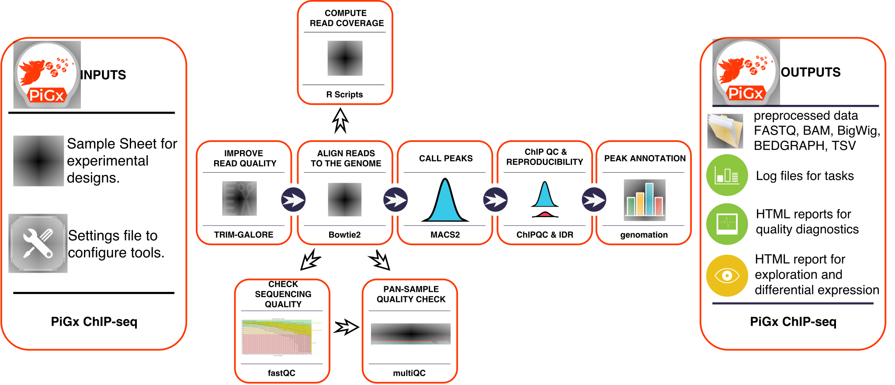

Copyright 2017-2018: Vedran Franke, Alexander Gosdschan, Ricardo Wurmus. This work is distributed under the terms of the GNU General Public License, version 3 or later. It is free to use for all purposes.
Summary
PiGX ChIPseq is an analysis pipeline for preprocessing, peak calling and reporting for ChIP sequencing experiments. It is easy to use and produces high quality reports. The inputs are reads files from the sequencing experiment, and a configuration file which describes the experiment. In addition to quality control of the experiment, the pipeline enables to set up multiple peak calling analysis and allows the generation of a UCSC track hub in an easily configurable manner.
What does it do
- Quality control reads using fastQC and multiQC
- Map reads to genome using Bowtie2
- Call peaks for multiple combinations of samples using MACS2
- Control reproducibility of experiments using IDR
- Generate a UCSC track hub to view in Genome Browser
What does it output
- QC reports
- bam files
- bigwig files
- narrowPeak files
- UCSC track hub folder
Pipeline workflow
 Figure 1: An overview of the PiGx ChIP-seq workflow
Install
At this time there are no ready-made packages for this pipeline, so you need to install PiGx from source.
You can find the latest release here. PiGx uses the GNU build system. Please make sure that all required dependencies are installed and then follow these steps after unpacking the latest release tarball:
./configure --prefix=/some/where
make install
Dependencies
By default the configure script expects tools to be in a directory
listed in the PATH environment variable. If the tools are installed
in a location that is not on the PATH you can tell the configure
script about them with variables. Run ./configure --help for a list
of all variables and options.
You can prepare a suitable environment with Conda or with GNU Guix. If you do not use one of these package managers, you will need to ensure that the following software is installed:
Software dependencies
- R - argparser - chipseq - data.table - genomation - genomicranges - rtracklayer - rcas - stringr - jsonlite - heatmaply - ggplot2 - ggrepel - plotly - python - snakemake - pyyaml - pandoc - fastqc - multiqc - bowtie - macs2 - idr - samtools - bedtools - bedToBigBed - bamToBedVia Guix
Assuming you have Guix installed, the following command spawns a sub-shell in which all dependencies are available:
guix environment -l guix.scm
Getting started
To run PiGx on your experimental data, first enter the necessary parameters in the spreadsheet file (see following section), and then from the terminal type
$ pigx-chipseq [options] sample_sheet.csv
To see all available options type the --help option
$ pigx-chipseq --help
usage: pigx-chipseq [-h] [-v] -s SETTINGS [-c CONFIGFILE] [--target TARGET]
[-n] [--graph GRAPH] [--force] [--reason] [--unlock]
samplesheet
PiGx ChIPseq Pipeline.
PiGx ChIPseq is a data processing pipeline for ChIPseq read data.
positional arguments:
samplesheet The sample sheet containing sample data in yaml format.
optional arguments:
-h, --help show this help message and exit
-v, --version show program version number and exit
-s SETTINGS, --settings SETTINGS A YAML file for settings that deviate from the defaults.
-c CONFIGFILE, --configfile CONFIGFILE The config file used for calling the underlying snakemake process. By
default the file 'config.json' is dynamically created from the sample
sheet and the settings file.
--target TARGET Stop when the named target is completed instead of running the whole
pipeline. The default target is "final-report". Pass "--target=help"
to describe all available targets.
-n, --dry-run Only show what work would be performed. Do not actually run the
pipeline.
--graph GRAPH Output a graph in Graphviz dot format showing the relations between
rules of this pipeline. You must specify a graph file name such as
"graph.pdf".
--force Force the execution of rules, even though the outputs are considered
fresh.
--reason Print the reason why a rule is executed.
--unlock Recover after a snakemake crash.
This pipeline was developed by the Akalin group at MDC in Berlin in 2017-2018.
Input Parameters
Sample Sheet
The sample sheet is a file in yaml format describing the experiment. It has following sections:
| section | required | description |
|---|---|---|
| samples | yes | describes the mapping of samples, specifying read file names and library type (single/paired) (see here for details) |
| peak_calling | yes | defines which samples will be used to detect regions of enriched binding ( multiple combinations and variations are possible, see here for details ) |
| idr | no | specifies pairs of peak calling analysis that are compared to determine the reproducibilty of the general experiment (see here for details) |
| hub | no | describes the general layout of a UCSC hub that can be created from the processed data and allows the visual inspection of results at a UCSC genome browser (see here for details) |
| feature_combination | no | defines for a list of peak calling and/or idr analysis the combination of regions shared among this list (see here for details) |
The creation of the sample sheet is straight forward considering the following snippets as template and put them into one file. Comments and examples within the snippets provide guidance of what is possible and what to take care of.
Samples
The samples used for any subsequent analysis are defined in the samples section.
# define mapping
samples:
# samples can have any name, but the names have to be unique
ChIP1:
fastq:
# file names of raw data in fastq format, either gzipped or not
- ChIP.fq.gz
# map reads in single-end mode
library: single
Cont1:
fastq:
- Cont.fq.gz
library: single
ChIPpe:
fastq:
- ChIPpe_R1.fq.gz
- ChIPpe_R2.fq.gz
# map reads in paired-end mode
library: paired
Peak Calling
The previously defined samples are used for subsequent peak calling analysis to detect regions of enriched binding. In this section any number of comparisons can be defined, while multiple combinations and variations are possible. In terms of peak calling the ChIP (also called treatment) is the sample in which we want to detect enriched regions compared to the Cont(rol) (or background) sample. Each analysis can be run with a unique set of parameters and default parameters for all analysis can be defined in the settings file , check available parameters and description here. For more information have a look at the publication for the software we are using "Zhang et al. Model-based Analysis of ChIP-Seq (MACS). Genome Biol (2008) vol. 9 (9) pp. R137".
# define peak calling analysis
peak_calling:
# analysis can have any name, but the names have to be unique
Peaks1:
# sample(s) to be used as treatment sample
ChIP: ChIP1
# sample(s) to be used as control sample
Cont: Cont1
params:
macs2:
# each analysis can be adjusted independently
# add/modify available parameters of the analysis
nomodel: ''
extsize: 300
Peaks2:
ChIP: ChIP2
Cont: Cont2
params:
macs2:
# each analysis can be adjusted independently
nomodel: ''
extsize: 147
Peaks4:
ChIP:
# multiple samples can be used as treatment
- ChIP1
- ChIP2
Cont:
# multiple samples can be used as control
- Cont1
- Cont2
params:
macs2:
nomodel: ''
Peaks5:
# the number of samples per group can differ
ChIP: ChIP2
Cont:
- Cont1
- Cont2
params:
macs2:
nomodel: ''
Peaks6:
# analysis can be performed without control
ChIP: ChIP1
Cont:
params:
macs2:
nomodel: ''
(optional) IDR
Assuming that the some samples are (biological/technical) replicates, in order to measure the consistency between them use the irreproducible discovery rate (IDR) "Li, Q., Brown, J. B., Huang, H., & Bickel, P. J. (2011). Measuring reproducibility of high-throughput experiments. The annals of applied statistics, 5(3), 1752-1779.", which is in general a good (but very stringent) quality control.
idr:
# idr analysis can have any name, but the names have to be unique
ChIP_IDR:
# define the pair of samples, add more combinations for more replicates
ChIP1: Peaks1
ChIP2: Peaks2
(optional) Hub
In the hub section the general layout of a UCSC Track Hubs is described with some minimal items. The track hub is generated from the processed data and allows the visual inspection of results at a UCSC genome browser (for supported genomes).
The required items to define the hub are the following:
| item | example | description |
|---|---|---|
| name | Pix_Hub | name of the hub directory |
| shortLabel | Pix_Short | short name of hub is displayed as name above track groups |
| longLabel | Pix_Hub_Long | descriptive longer label for hub is displayed as hub description |
| my.mail[at]domain.com | whom to contact for questions about the hub or data | |
| descriptionUrl | pix_hub.html | URL to HTML page with a description of the hub's contents |
| super_tracks | see below | specification of hub layout (track groups, tracks) |
This is a small example how this could look like:
hub:
name: Pix_Hub
shortLabel: Pix_Short
longLabel: Pix_Hub_Long
email: vedran.franke@mdc-berlin.de
descriptionUrl: pix_hub.html
super_tracks:
# track groups can have any name, but the names have to be unique
Tracks1:
# tracks can have any name, but the names have to be unique
track11:
# to add peaks as a track, define "type: macs"
name: Peaks1
type: macs
track12:
# to add coverage signal as a track, define "type: bigwig"
name: ChIP1
type: bigWig
# descriptive longer label for track group is
# displayed as description in track settings
long_label: Tracks1_long
(optional) Feature Combination
To find the combination of enriched binding regions, which is shared among a set of peak calling and/or idr analysis results, define a feature in the feature_combination section. Only items defined in the peak_calling and idr sections can be used here.
feature_combination:
# features can have any name, but the names have to be unique
Feature1:
# define feature based on only one result
- ChIP_IDR
Feature2:
# define feature based on more than one result
- Peaks6
- Peaks5
Feature3:
# define feature based on different analysis types
- ChIP_IDR
- Peaks5
Settings File
The settings file is a file in yaml format specifying general settings. It has the following sections:
Locations
Defines paths to be used in the pipeline, some of the items are required and some optional (can stay blank):
| item | required | description |
|---|---|---|
| input-dir | yes | directory of the input files (fastq files) |
| output-dir | yes | output directory for the pipeline |
| genome-file | yes | path to the reference genome in fasta forma |
| index-dir | no | directory containing pre-built mapping indices for the given reference genome (created with bowtie2-build) |
| gff-file | no | location of a GTF file with genome annotations for the given reference genome |
General
These are settings which apply to all analysis (unless adjusted in single analysis):
| item | required | description |
|---|---|---|
| assembly | yes | version of reference genome (e.g. hg19,mm9, ...) |
| params | no | list of default parameters for tools and scripts (for tools check respective manual for available parameters) |
Execution
The execution section in the settings file allows the user to specify whether the pipeline is to be submitted to a cluster, or run locally, and the degree of parallelism. For a full list of possible parameters, see etc/settings.yaml.
The settings file could look like this:
locations:
input-dir: in/reads/
output-dir: out/
genome-file: genome/my_genome.fa
index-dir:
gff-file: genome/mm_chr19.gtf
general:
assembly: hg19
params:
extend: 200
scale_bw: 'yes'
bowtie2:
k: 1
idr:
idr-threshold: 0.1
macs2:
g: hs
keep-dup: auto
q: 0.05
extract_signal:
expand_peak: 200
bin_num: 20
execution:
submit-to-cluster: no
rules:
__default__:
queue: all.q
memory: 8G
bowtie2:
queue: all.q
memory: 16G